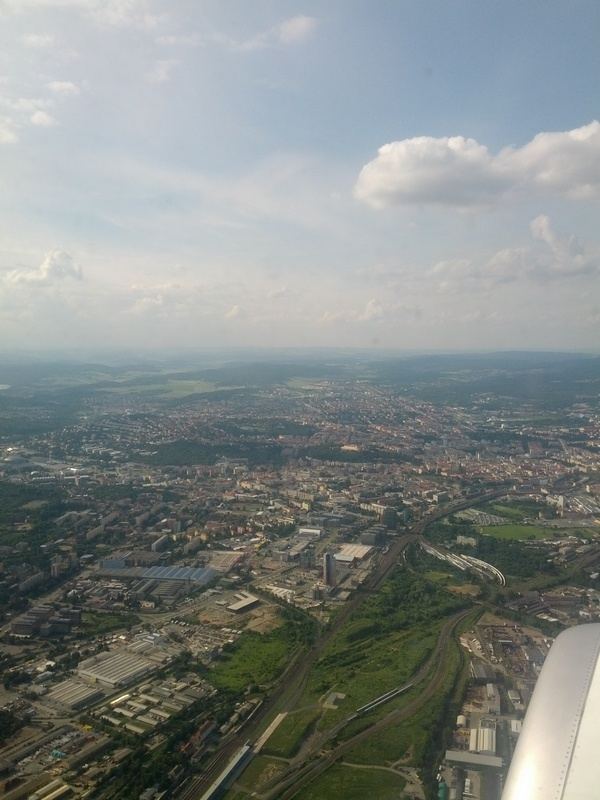
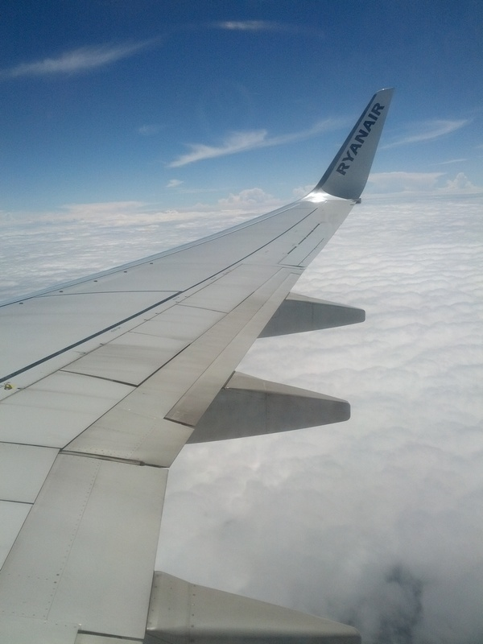
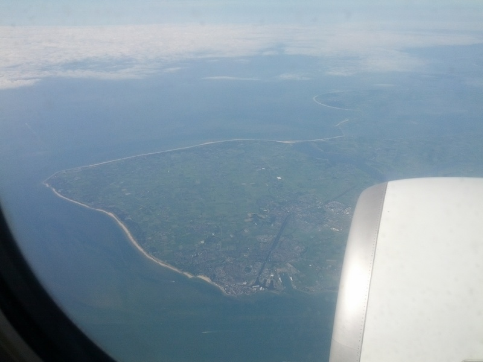
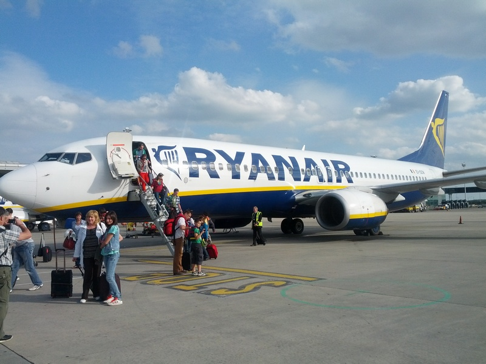

Většina mých milých čtenářů už jistě ví, že letos se cílem naší dovolené stala britská metropole - Londýn. Pokud si ještě vzpomínáte na mé články o cestě za oceán, Londýn a já - to byla láska na první pohled. Na to první setkání před přistáním na Heathrow nikdy nezapomenu. Už tehdy jsem doufala, že se spolu nevidíme naposledy. Čekala jsem tři roky, než se tenhle sen stal skutečností. Anglie však nakonec splnila všechna má očekávání, a tak se v nejbližších dnech můžete těšit na spoustu fotek, historek a dojmů. Těšíte se :)???
V cíli cesty jsme tedy měli od začátku jasno. Věděli jsme také, že určitě poletíme s nějakou nízkonákladovkou. Někdy koncem května jsme si zabůkovali letenky u společnosti Ryanair. Pokud se rozhodnete s nimi také někdy v budoucnu letět, vězte, že jejich webovky jsou naprosto příšerné. Rezervaci musíte vyplňovat strašně rychle, jinak vám to celé spadne a můžete začít od začátku (což se nám také několikrát stalo 8-)). Podařilo se nám tedy sehnat přímý zpáteční let Brno, Tuřany -> Londýn, Stansted na ideální termín. Letenky se dají u Ryanairu koupit za opravdu slušný peníz, pokud si ale nevystačíte jen s příručním zavazadlem, musíte si za kufr o maximální váze 15kg zhruba tisícovku ještě připlatit. Je to dost, ale kufr na suvenýry se vám určitě bude hodit ;-)!
Poté, co jsme vyřešili letenky, vrhli jsme se na hledání ubytování. Londýn je jedno z nejdražších měst na světě, takže jsme nakonec usoudili, že jet “jen” na 6 nocí je dobrá volba. I tak jsme museli dlouho brouzdat internetem, než se nám podařilo sehnat střechu nad hlavou za přijatelné peníze. Nevědomky jsme si vybrali termín, ve kterém se měl konat Wimbledon, takže do Londýna se valila spousta fanoušků. To nám ale došlo až mnohem později :D. Vybrali jsme si nakonec síť hotelů Easy Hotel, která má pobočky po celém Londýně. Zvolili jsme hotel na Earl’s Court nedaleko Hyde Parku a co se týče polohy, byl to skvělý tah. Earl’s Court je dopravní uzel, ze kterého se dá často i bez přestupu dopravit k celé řadě nejslavnějších památek.
Po těchto přípravách už nezbývalo nic jiného, než vypůjčit v knihovně nějaké ty průvodce s mapou, vytipovat nejzajímavější místa, objednat cestovní pojištění a zabalit kufr. Já osobně jsem počítala spíš s horší variantou počasí (jaké bylo mé překvapení, když jsem se hned první den dovolené opálila :D!) a každodenním deštěm (doopravdy nepršelo ani jednou, nepočítám-li lehkou spršku v Greenwichi). Při plánování cesty nám velmi pomohly webové stránky Minty trips. Pokud se chystáte do Anglie, určitě na ně mrkněte - najdete tam spoustu cenných informací o Londýně, doporučení na zajímavé památky, možnosti dopravy z letiště i po městě, gastronomické tipy a mnoho dalšího.
Takto vybavení jsme se tedy v sobotu (na Péťův svátek :-)) vypravili na brněnské letiště. Péťu čekal jeho první let v životě, takže byl trošku nesvůj. Tuřany jsou naštěstí opravdu maličké a nevyvolávají pocit zmatku tak, jako ostatní letiště. Navíc jsme na informacích potkali naši sousedku Danu, která je letuška :D. Let samotný proběhl úplně v pohodě. Mohli jsme si dokonce i vybrat, kde chceme sedět (systémem “kdo dřív přijde…”), takže jsme si hned zabrali okénko a díky tomu si prohlédli z výšky celé Brno.

Loučení s Brnem

V oblacích

Nad Holandskem
Po zbytek cesty bylo spíše oblačno - mraky se protrhaly teprve nad Nizozemím, ale jasno pak už vydrželo až do cílové destinace. Hned po příletu jsem si pomyslela, že ty řeči o londýnském počasí snad musí být jen hloupý kec. Londýn mě totiž i tentokrát přivítal slunečními paprsky :-).

Naše letadlo po šťastném přistání
Trochu jsem se obávala, jak se zorientujeme na Stanstedu. Naštěstí to není zas tak veliké letiště, takže jsme všechno v pohodě našli, prošli pasovou kontrolou, vyzvedli si kufr a šli hledat autobus, který nás dopraví do centra. Lístky na National Express jsme si koupili už v letadle - díky milé slečně, která seděla vedle nás a cestovala s rodiči na Wimbledon, a která zjistila, že jízdenky koupené přes Ryanair jsou o několik liber levnější. Vzali jsme si tedy rovnou zpáteční jízdenku, která nás pro 2 osoby vyšla na 34 liber.
Autobus jsme našli bez problémů, přijel během čtvrt hodinky a už jsme si to frčeli směr Londýn - po levé straně samozřejmě :). Tato první okružní jízda po Londýně se mi hrozně líbila. Projeli jsme se po St. John’s Wood, Baker Street, Oxford Street i okolo Hyde Parku. Nakonec nás autobus vyplivnul na Victoria Station, což bylo úplně ideální - zastávka ležela na přímé lince metra, která vedla až k našemu hotelu. Nejprve nás ale samozřejmě čekal náročný úkol - vyřídit si Oyster Card - kreditovou jízdenku na městskou hromadnou dopravu. Chlápek u okénka nám nejdřív chtěl prodat týdenní. Rozhodně se tím ale nenechte zlákat! Týdenní jízdenka se vám vyplatí, jen pokud budete skutečně hodně jezdit. Podle mě je ale mnohem lepší prozkoumávat Londýn pěšky. Na Oyster Card si dobijete tolik peněz, kolik skutečně projedete. Doporučila bych tedy zpočátku míň - dobít můžete vždycky. Při odjezdu vám každopádně zálohu za Oyster Card (5 liber) i nevyužité peníze vrátí.
Vybaveni Oyster kartou jsme se rozhodli poohlédnout ještě po nějaké večeři. Přímo na stanici Victoria jsme našli obchůdek Marks and Spencer. Ano, značka jídla, které u nás v Čechách představuje “luxus”, který si dopřeju, když si chci přilepšit, je tady vnímán jako běžný řetězec typu Tesco (které tu mimochodem také naleznete v hojném počtu). Ceny samozřejmě pořád nejsou tak příznivé jako v Čechách, nicméně i tak představuje stravování v M&S jednu z nejlevnějších možných variant. Nakoupili jsme si tedy něco k pití, tousťák, lákavě vyhlížející paštiku, sýr a vínečko na oslavu našeho příjezdu. A pak už hurá na metro a hledat náš hotel.
Mezitím už se setmělo, nicméně Earl’s Court nevypadal na první pohled nijak nebezpečně. Hlavní třída je plná různých fast foodů a restaurací, obchůdků se suvenýry, ale také sámošek typu Sainsbury’s, které se nám během našeho pobytu několikrát postaraly o báječnou večeři/snídani. Hotel jsme našli bez obtíží, ubytovali se v našem mrňavoučkém pokojíčku bez oken a abychom zahnali pocity klaustrofobie, před kterými nás varovali cestovatelé na Trip Adviseru, exnuli jsme víno a vytuhli v očekávání příštího dne :)…